RESEARCH AUDIT · 22 NOVEMBER 2026
Evidence you can inspect.
Six historical diffusion experiments, revised full research reports, corrected evaluation, and a reproducible protocol for the next research lineage.
Saved results reproduced
Two fresh analysis runs each processed all 4,992 saved evaluation images across the six experiments. Numeric morphology/spatial observations matched the saved baselines; the two fresh metric JSON records were identical in the same local environment. Input hashes, per-image counts and preservation of the original results were verified. Historical FID/KID was excluded because its protocols differ; this check does not establish independent model accuracy.
The folder map and one-command reproduction instructions are available in the reproduction guide. Exact saved-image reanalysis requires the local images and paired masks, which are excluded from ordinary Git.
Inspect reproduction evidenceRevised full research reports
Every experiment page now contains its complete revised report, with methods, mathematical definitions, dataset composition, result images, uncertainty, assumptions, errors identified, conclusions and citations. Original report bytes and figures are preserved in the repository archives. The report checks verify source signatures and available per-sample confusion counts; they do not establish independent scientific validity.
| Experiment | Revised report |
|---|---|
| 1 | 2,727 words |
| 2 | 2,765 words |
| 3 | 2,723 words |
| 4 | 2,752 words |
| 5 | 3,159 words |
| 6 | 4,298 words |
What has actually been measured
| Experiment | Generated images | Heuristic agreement | Evidence type |
|---|---|---|---|
| Experiment 1 | 1000 | Not reported | Descriptive heuristic evaluation |
| Experiment 2 | 2000 | 58.45% | Descriptive heuristic evaluation |
| Experiment 3 | 400 | 64.25% | Descriptive heuristic evaluation |
| Experiment 4 | 80 | Not reported | Descriptive heuristic evaluation |
| Experiment 5 | 112 | Not reported | Descriptive heuristic evaluation |
| Experiment 6 | 1400 | 87.86% | Descriptive heuristic evaluation |
The experiments differ in resolution, data and evaluation protocol. These numbers are descriptive, not a controlled ranking.
Current research_v5 splits
| Dataset | Rows | Train | Validation | Test | Acquisition overlap |
|---|---|---|---|---|---|
| exp1_exp2_sdnet_64 | 56092 | 43846 | 6606 | 5640 | 0 |
| exp3_augmented_128 | 61001 | 48088 | 6898 | 6015 | 0 |
| exp4_level_a_morphology_256 | 13139 | 10325 | 1537 | 1277 | 0 |
| exp5_exp6_level_bc_mechanisms_256 | 15440 | 12357 | 1565 | 1518 | 0 |
Audited 67,264 original files: 65,866 distinct decoded images and 1,398 duplicate copies beyond first occurrences. Connected groups link inferred SDNET acquisitions, other original-image identities, exact byte/decoded-RGB aliases, and conservative similarity candidates consistently across all six experiments.
Earlier split versions remain archival. Existing checkpoints were exposed to historical images, so these splits support a new training lineage only.
Inspect content auditCross-split similarity screening
The v4 split contained 386 cross-split similarity candidate pairs: 169 training–test, 195 training–validation and 22 validation–test. V5 conservatively groups all 1,111 declared-threshold links, including links originally within a split, before assigning connected components. Repeating the same screen on v5 found 0 cross-split candidates.
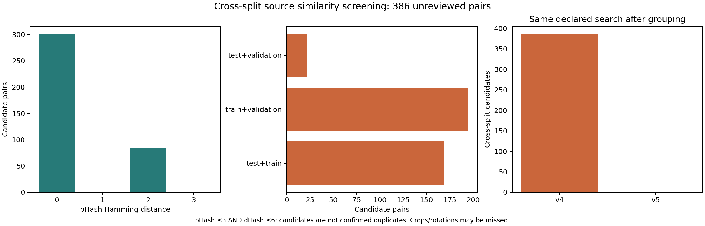
Assumptions and limits
Candidate thresholds are pHash Hamming distance ≤3 and dHash distance ≤6. The thresholds are uncalibrated on this dataset. Grouping suspected aliases does not label them confirmed duplicates; false-positive links can reduce the number of independent groups. The search may miss crops, rotations, flips and larger edits. Site and structure independence remain unverified. Zero candidates under this search is not proof of complete independence.
Full research training now requires v5. A v5 one-batch training/validation smoke run passed; full clean models and research evaluations remain pending.
EVALUATOR CHECK
How reliable is the crack detector?
Pixel-mask comparison on 51 DeepCrack originals (102 native tiles). Calibration searched 24 settings using 46 validation originals only. Both studies used the archived research_v1 selection, not the newer research_v4 split. Test results had already been inspected, so the calibrated comparison is exploratory.
| Pixel metric | Fixed detector | Validation-selected detector |
|---|---|---|
| Precision | 33.7% | 42.4% |
| Recall | 58.8% | 61.2% |
| Iou | 27.3% | 33.4% |
| Dice | 42.8% | 50.1% |
Exact mask correspondence measures visible cracks, not structural failure mechanism. Real-image mask performance does not establish generated-image detector validity. Original-image cluster-bootstrap intervals and the full protocol are retained in the metric records.
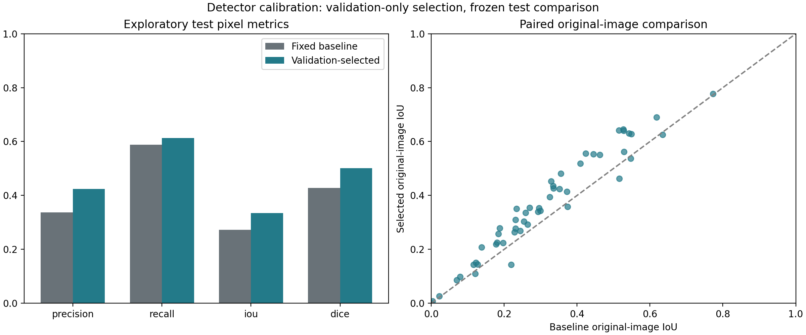
Inspect representative detector errors
Left: original tile. Right: red false positives, green missed mask pixels, cyan overlap. Examples are the three lowest and three highest first-tile IoU values, not a random sample.

PAIRED CONTROL STUDY
Does the spatial field change the output?
126 images across seven classes, three seeds, and correct / zero / shuffled fields. Each cracked class contributes two commands per seed. Outputs are scored against the original correct command. The audit verified identical initial RNG states within each pair and byte-identical non-cracked controls.
| Detector | Field | Cracked images | Trajectory recall | Empty detections | Conditional distance MAE (px) |
|---|---|---|---|---|---|
| fixed | correct | 36 | 98.6% | 0 | 0.47 |
| fixed | zero | 36 | 0.0% | 36 | No detected crack; distance undefined |
| fixed | shuffled | 36 | 11.3% | 0 | 27.95 |
| calibrated | correct | 36 | 98.1% | 0 | 0.51 |
| calibrated | zero | 36 | 0.0% | 36 | No detected crack; distance undefined |
| calibrated | shuffled | 36 | 11.1% | 0 | 27.92 |
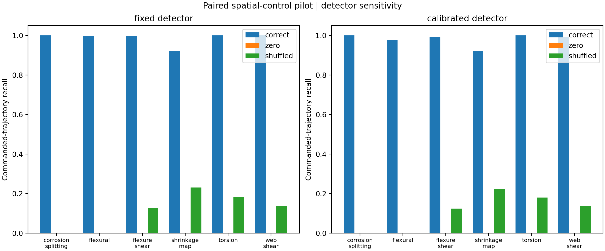
This is a small historical-checkpoint sensitivity pilot. The zero-field/requested-class pairing may be outside the training distribution, and shuffled-field mismatch is expected to reduce correspondence to the original command. These results do not establish physical causation or replace a separately trained class-only baseline.
Missing cracks are counted explicitly. Distance means exclude empty detections; they are not assigned the legacy fixed 50-pixel penalty.
Inspect paired audit and limitations
non cracked: paired examples
Seed 2026, both sampled commands, shown in the same order. This fixed-seed display is illustrative.


flexural: paired examples
Seed 2026, both sampled commands, shown in the same order. This fixed-seed display is illustrative.

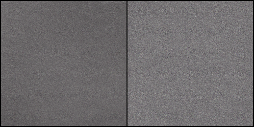
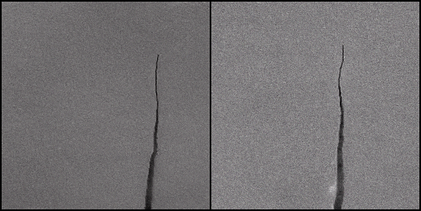
flexure shear: paired examples
Seed 2026, both sampled commands, shown in the same order. This fixed-seed display is illustrative.


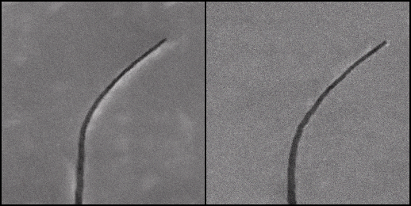
web shear: paired examples
Seed 2026, both sampled commands, shown in the same order. This fixed-seed display is illustrative.


torsion: paired examples
Seed 2026, both sampled commands, shown in the same order. This fixed-seed display is illustrative.


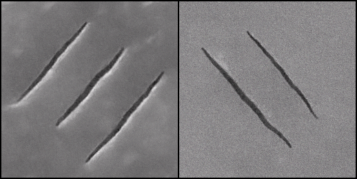
corrosion splitting: paired examples
Seed 2026, both sampled commands, shown in the same order. This fixed-seed display is illustrative.
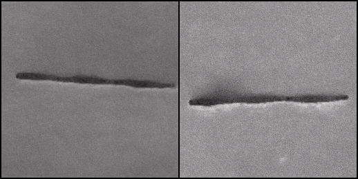


shrinkage map: paired examples
Seed 2026, both sampled commands, shown in the same order. This fixed-seed display is illustrative.
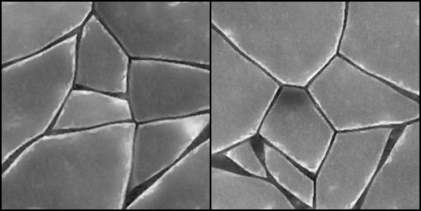


RC source and annotation quality
The matching publisher record is Wang (2026), Mendeley Data v1, DOI 10.17632/3ghxck2wd5.1. The publisher requests the Wang et al. (2024) paper as well and declares CC BY 4.0. Archive identity against publisher checksums and upstream acquisition lineage remain unverified.
The local subset contains 10,519 images and matching JSON files, with 16,157 crack-labeled rectangles and no empty annotations. Extracted file CRCs and sizes match the local ZIP records; archive SHA256 values are saved. This verifies local consistency, not publisher identity or label correctness.
1,145 source annotations have a geometry or metadata flag: 1,122 contain coordinates outside image bounds and 150 have annotation/image dimension mismatches (categories overlap). Of these, 481 records feed the base Experiment 5/6 dataset. The strict_rc_geometry_v1 view excludes them conservatively, while retaining v5 component IDs and split assignments.
| Partition | Base v5 records | Excluded | Qualified records |
|---|---|---|---|
| train | 12357 | 371 | 11986 |
| validation | 1565 | 67 | 1498 |
| test | 1518 | 43 | 1475 |
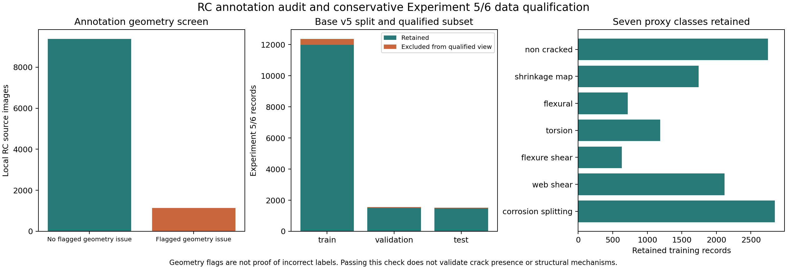
Assumptions and limits
Any flagged RC annotation record is excluded from the prospective box-dependent Exp5/6 view. This includes small coordinate overruns; coordinates are not automatically repaired or rescaled. All seven proxy classes remain present. Passing geometry checks does not validate crack presence, bounding boxes, segmentation masks or structural failure mechanisms. Exclusion does not prove every flagged label is wrong. Exp3 uses image-level labels without boxes and is not filtered by this geometry policy. Historical models and datasets remain archival.
Local inventory and archive hashes · Publisher record and identity limits · Qualification policy and manifest signatures
Reproducible pipeline checks
Experiments 4–6 passed one-batch training and validation smoke runs. An Experiment 6 checkpoint restart matched uninterrupted model and EMA tensors exactly on this machine. These checks establish pipeline behavior, not scientific model quality.
Requirements before strong research claims
- Complete unambiguous provenance and group-isolated manifests
- Clean training and transfer-learning lineage
- Expert validation of mechanism labels
- Independent detector validation
- Three-seed evaluations with consistent sample budgets
- Ablations and external-dataset checks
- Corrected reports, plots and website matching verified artifacts
Experiment 1
1,000 images evaluated. The morphology detector flags 77.1% as cracked. This is detector prevalence, not a ground-truth accuracy score.
Read complete experiment page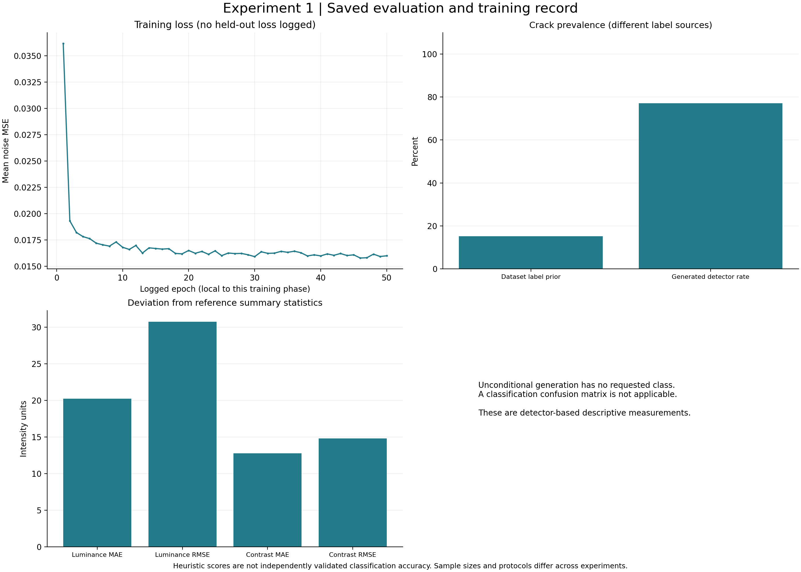
Experiment 2
2,000 generated images evaluated. Requested-class agreement with the morphology heuristic: 58.45%. The detector has not been independently calibrated for this generated-image domain.
Read complete experiment page
Experiment 3
400 generated images evaluated. Requested-class agreement with the morphology heuristic: 64.25%. The detector has not been independently calibrated for this generated-image domain.
Read complete experiment page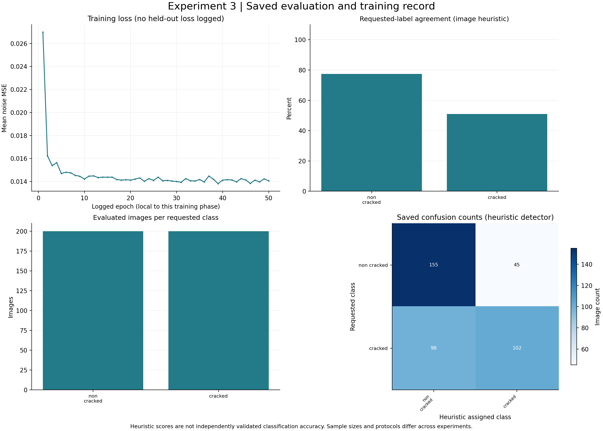
Experiment 4
80 generated images evaluated (16 per class). The heuristic clean-surface rate is 0%; longitudinal, transverse and diagonal alignment rates are 0%. These findings require detector calibration and visual review; continuity improvement is not established by these measurements.
Read complete experiment page
Experiment 5
112 generated images evaluated (16 per class). Heuristic adherence varies by class; flexure-shear is 50% and web-shear is 62.5%. These small-sample proxy results do not establish structural failure mechanisms.
Read complete experiment page
Experiment 6
1,400 generated images evaluated. Requested-class agreement with the morphology heuristic: 87.86%. The detector has not been independently calibrated for this generated-image domain. The former 99.29% score used requested-class-dependent assignments and is superseded by this corrected 87.86% result.
Read complete experiment page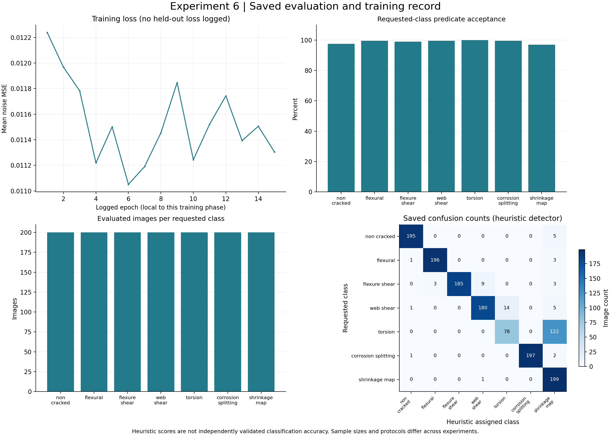
Method and dataset sources
- ho2020ddpm: Diffusion training and noise-prediction foundation
- song2020ddim: DDIM sampling foundation
- ho2022cfg: Classifier-free guidance foundation; project-specific joint field/class dropout is an implementation choice
- heusel2017fid: FID definition and original proposal; does not validate structural mechanisms
- binkowski2018kid: Original KID proposal
- maguire2018sdnet: SDNET dataset and 230-source-photo acquisition counts
- liu2019deepcrack: Dataset source, masks, split definitions and citation
- shi2016crackforest: Dataset source and citation
- wang2026rc10519: Matching RC_10519 publisher record and declared license; local archive identity against publisher checksum remains unverified
- wang2024uavcracks: Paper citation explicitly requested by the RC10519 dataset publisher; no mechanism-label or independence validation implied
- zhang2018lpips: LPIPS foundation; historical index-paired diagnostics do not establish reconstruction or crack correctness
Bibliography file. RC archive byte identity, upstream acquisition lineage and engineering-context sources remain outstanding; none of these method references establishes physical causation in generated patches.